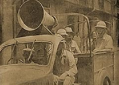
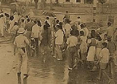

|
j
a v a s c r i p t |
September 15, 1944 Tribune: "20 foe planes downed over Southern Philippines" during September 12 and 13 — a small article in bold type. The total claim for the month of August is 816 planes "blasted" including "set ablaze" and "heavily damaged." For this, they lost 27 in their usual way plus 33 on the ground. Quipped one: "How can they be short of planes when they don't lose any?" "Heavy losses dealt on enemy in New Guinea." They are supposedly "nailed to the beaches east of Aitape." News: First, MacArthur's forces landed on Morotai — Halmahera's northernmost island. Second, Americans started landing operations in Palau. The first news made me sigh; the second one made me almost break down and cry. It means a delay of some weeks for the Philippine campaign — probably unnecessary because the results of the Negros, Cebu, Panay, and Negros raids are sensational: altogether the Japanese lost 433 planes, 501 if we include the carrier raid on Mindanao. In addition, 40 "ships" were sunk and 44 others were damaged. The Thursday-to-Thursday total is 173 ships sunk or damaged, excluding 32 sampans. One Japanese at the TVT intimated to a relative of one of the ex-owners that the Americans wiped out the Japanese airforce in the Visayas; an invasion of Mindanao was expected any time. Now that MacArthur and Nimitz are off on their latest adventure, the "alert" stayed on all day today. The Japanese ships that left Manila Bay hurriedly last Friday are still away. Meanwhile, every night, residents who live in Pasaje del Carmen near the Boulevard, hear the Japanese rushing goods into that area from their huge stockpiles in the port.

Manila Constabulary Chief Antonio C. Torres
with mike enforcing alert restrictions

Manila Constabulary directing pedestrians
during Tuesday's alert signal |
|
|
|
|